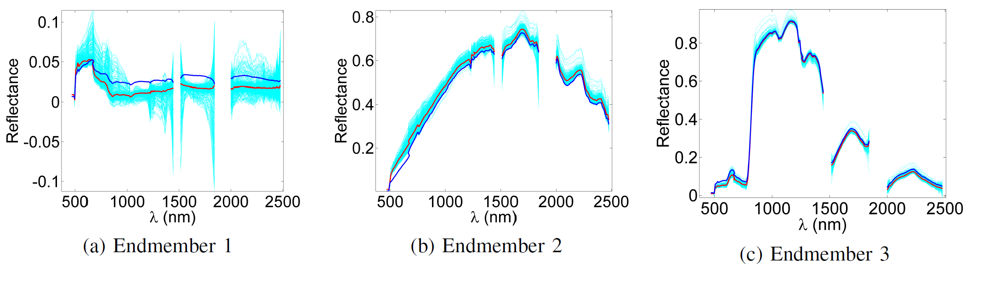

Perturbed linear mixing model (PLMM)
Given a mixed hyperspectral data set, linear unmixing
aims at estimating the reference spectral signatures
composing the data - referred to as endmembers - their abundance
fractions and their number. In practice, the identified
endmembers can vary spectrally within a given image and can
thus be construed as variable instances of reference endmembers.
Ignoring this variability induces estimation errors that
are propagated into the unmixing procedure. To address this
issue, endmember variability estimation consists of estimating
the reference spectral signatures from which the estimated
endmembers have been derived as well as their variability with
respect to these references. This paper introduces a new linear
mixing model that explicitly accounts for spatial and spectral
endmember variabilities. The parameters of this model can
be estimated using an optimization algorithm based on the
alternating direction method of multipliers. The performance of
the proposed unmixing method is evaluated on synthetic and real
data. A comparison with state-of-the-art algorithms designed to
model and estimate endmember variability allows the interest of
the proposed unmixing solution to be appreciated.

Fig. 1. Endmembers estimated by the PLMM-based unmixing algorithm (Moffett scene). The
estimated endmembers (red lines) are plotted with the VCA endmembers (blue lines) for comparison, and typical examples of the estimated variability are given in cyan dotted lines.
The PLMM as well as the associated unmixing algorithm are described in the paper published in IEEE Trans. Signal Processing in 2016:
- article
 [ .pdf - 6.4Mo ].
[ .pdf - 6.4Mo ].
The PLMM-based unmixing algorithm is available as a MATLAB code:
- matlab codes
 [ .zip - 2.3Mo ].
[ .zip - 2.3Mo ].